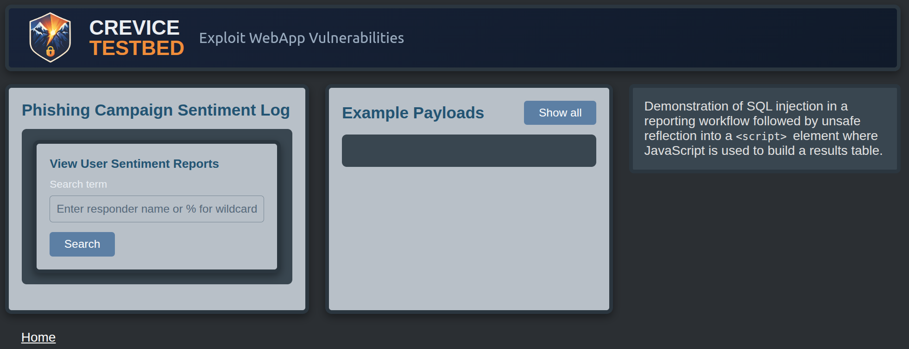
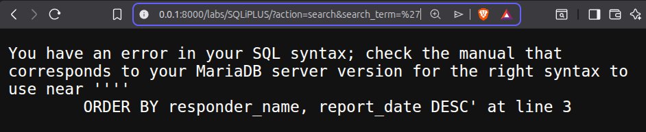
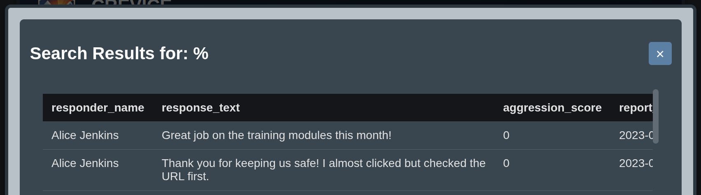
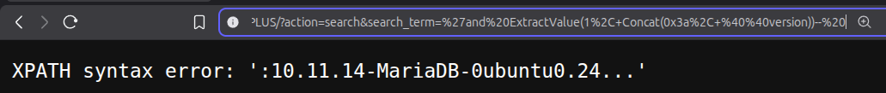
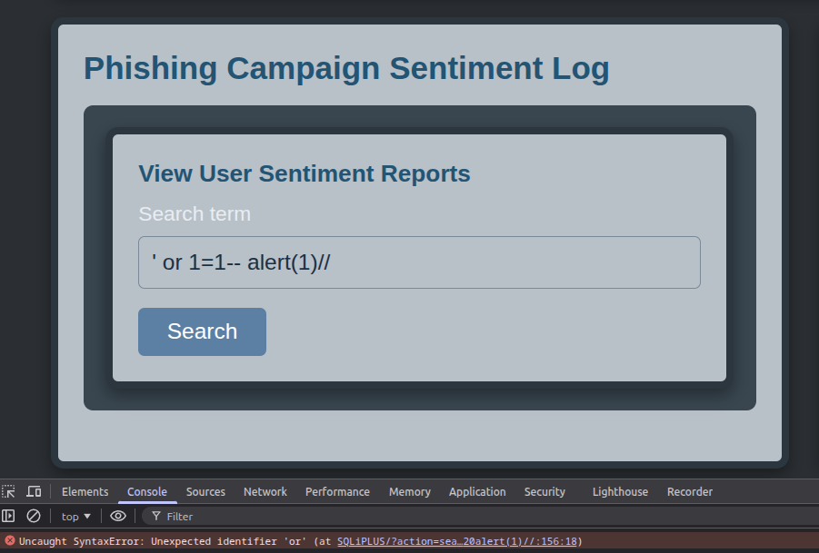
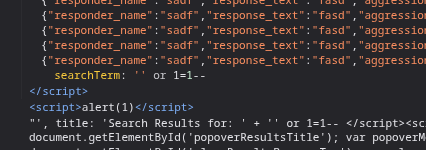
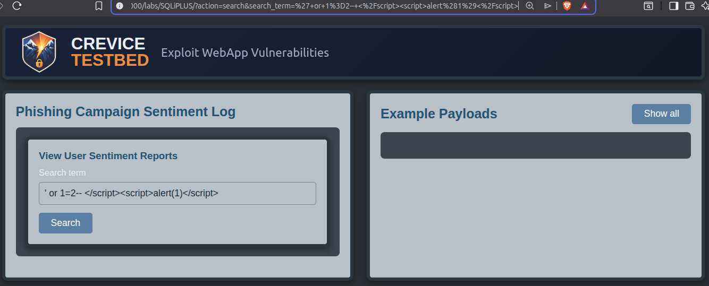
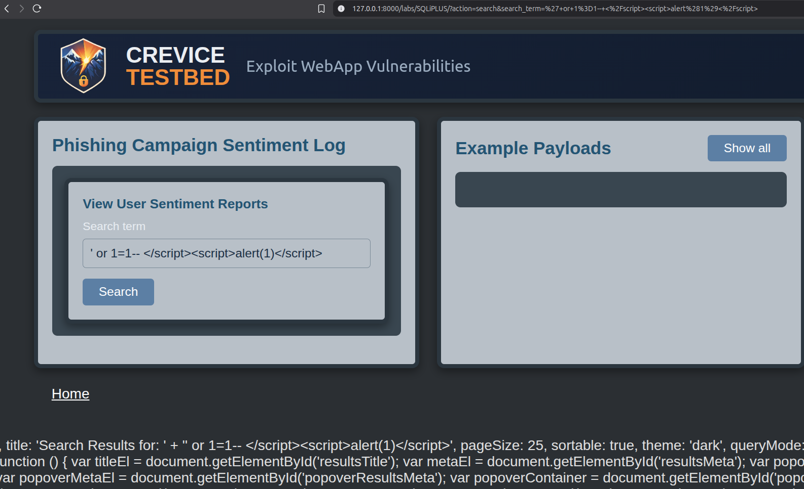

SQL Injection Leading to XSS How a Server-Side Injection Exposed a Client-Side Execution Path

Summary
A seemingly straightforward SQL injection vulnerability led to a more interesting finding: a script-context Cross-Site Scripting (XSS) vulnerability that was conditionally reachable only when the injected query returned a valid result. This behavior was later emulated in my intentionally vulnerable webapp, Crevice Testbed.
The application’s logic required a successful query before rendering a client-side table. By injecting
a payload that evaluated to true, the conditional logic was satisfied and I was able to reach a code path where
user input was unsafely embedded into a <script> element without proper encoding.
If the users search query or the SQL injection didn't return a result, the application never executed this rendering logic, and the XSS sink remained inaccessible. This created a dependency between server-side query behavior and client-side execution, where exploitation required controlling both.
Initial Observations
This issue wasn't identified through automated scan findings.
While reviewing scan logs, I noticed that one request had returned a 500 Internal Server Error. The response itself wasn't flagged as a vulnerability, but the presence of a server-side error piqued my curiosity and inspired me to take a closer look.
Examining the response revealed that the error was a SQL error message, indicating
that an injected single quote ' resulted in a SQL syntax error. These kinds of errors often mean
that user input is being directly incorporated into a SQL query without proper handling or
sanitization.

From there, I began manually testing the parameter and was able to confirm SQL injection by reproducing syntax errors and refining payloads until I achieved a working proof of concept returning the SQL server's version.
At this stage, the vulnerability appeared to be a standard error-message based SQL injection.
What Changed During Exploitation
While attempting to demonstrate the impact, I began experimented with payloads that produced broken SQL, and valid SQL that altered query behavior. Specifically, I crafted an injection that evaluated to a true condition that didn't return any actual database results.
When this occurred, the application followed a different execution path and proceeded to build a client-side table using the query results.

During this process, I noticed that my original input was being reflected inside an inline
<script> element without proper encoding. The input was being used to construct a
JavaScript object responsible for building the table.
This revealed the Cross-Site Scripting issue.
If the injected SQL did not resolve in a way that returned data, this code path was never reached. When it did return data, the script element was rendered and the input became part of the client-side execution context.

The Vulnerable Behavior
The following example demonstrates an emulated version of the vulnerable behavior observed during testing.
In the original application, user input was incorporated directly into a SQL query:
WHERE responder_name LIKE '$search_term'Because this input wasn't sanitized, it was possible to manipulate query behavior and control whether the application returned results.
In the Crevice Testbed emulation, this behavior is reproduced through a search feature where user input determines whether records are returned from a dataset. When the query succeeds and returns data, the application proceeds to render the results.
As part of that rendering process, the application embeds the search term into a JavaScript object:
var TableOptions = {
searchTerm: 'ENCODED_INPUT',
title: 'Search Results for: ' + 'RAW_INPUT'
};This object is then used to dynamically construct a results table in the browser.
Key Constraint
The script element containing this object is only rendered when the query returns at least one row. The emulation looks like this:
if ($search_executed && !empty($rows))This creates a dependency where the XSS sink is only reachable if the SQL injection produces a valid result.
Client-Side Assumptions
The client-side rendering logic in this application follows a pattern commonly seen when using third party libraries, where user-provided data is passed into a JavaScript configuration object and used to dynamically build visual output.
Libraries in this category often don't treat input sanitization as part of their threat model. Their responsibility is rendering data, and they rely on developers to ensure that any user-controlled input is safe for the context in which it is used.
In this case, that assumption was violated.
User-controlled input was passed directly into a script context without encoding, allowing it to break out of the intended structure and execute arbitrary JavaScript. The original behavior was in a third party table renderer usage, but this wasn't a vulnerability in the library itself, it was a misuse of its expected input handling model.

Exploitation
Exploitation required satisfying both server-side and client-side constraints.
The injected payload needed to:
- Produce valid SQL
- Return at least one row-- true counts
- Preserve control over the injected input
Many payloads failed because they broke SQL syntax or returned no results, preventing the script block from being rendered.
Once a payload satisfied these conditions, the application rendered the inline script as long as it lived within a SQL comment.
At that point, the following payload achieved code execution:
'or 1=1-- </script><script>alert(1)</script>This payload:
- provides a SQLi that always resolves to true
- comments out the rest of the original SQL query
- terminates the existing script element
- injects a new script element
- executes arbitrary JavaScript
Directly injecting JavaScript into the existing script context appeared unviable.
The payload first has to satisfy the SQL injection requirements and the single quote ' used to break
out of the string context and introduce the SQLi also terminates the string in the original JavaScript.
The result is that OR in or 1=1-- is interpreted as javascript as seen in figure 5 above. Because OR
is not a defined variable or operator in this context, it causes a syntax error that I was unable to resolve.
As a result, the payload terminates the existing <script> element
and injects a new one, ensuring execution occurs in a clean JavaScript context.

It's possible that a more carefully constructed payload could satisfy both SQL and JavaScript constraints simultaneously, but I wasn't able to identify one.
Why Wasn't it Identified Earlier?
The SQLi vulnerability wasn't identified during automated scanning due to assumptions about scan configuration.
I had an expectation that SQL injection testing was included in the scan profile in use. In reality, SQLi testing wasn't being performed, creating a gap in coverage that allowed a straightforward injection flaw to go undetected.
Importantly, the vulnerability would almost certainly have been identified if the intended testing had actually been performed.
This highlights a broader lesson that applies across DevSecOps, Security Testing, and Penetration Testing workflows:
Teams must ensure that testing scope and scan configurations are derived from the organization’s threat model and risk priorities.
It is not enough to run a scan. Teams need to:
- understand exactly what their tools are configured to test
- ensure testing scope reflects real-world risk and exposure
- review policies and assumptions that drive testing decisions
- confirm that expected coverage matches actual behavior
Without that alignment, it's easy to believe that common vulnerabilities have been tested when they haven't.
Takeaway:
DAST effectiveness depends not only on the capabilities of the tool, but on a precise understanding of how it is configured and what it is actually testing.
This issue is also easy to overlook not because it’s subtle, but because of how it’s encountered during testing.
The SQL injection itself is a critical vulnerability and should stand out immediately to anyone who identifies it. However, in this case, it wasn’t initially investigated because of the assumption that testing for common vulnerabilities had already been performed.
When coverage is assumed, it becomes easy to overlook signals that would otherwise prompt investigation.
The discovery began with a single anomalous server response. A tester who doesn’t question that behavior, or assumes it’s already been accounted for, may never investigate further.
This highlights an equally important principle:
Effective security testing requires curiosity and a willingness to challenge assumptions in addition to technical capability.
Once the parameter was examined manually, the SQL injection wasn't difficult to confirm. A single quote ' triggered a database error, and adjusting the input to restore valid syntax '' resolved the error, clearly indicating that user input was being unsafely incorporated into a SQL query.

However, fully exploiting the vulnerability required understanding the surrounding query context. While the injection itself was straightforward to validate, crafting a payload that preserved valid SQL and influenced application behavior required additional analysis.
Automated scanners configured to test for SQLi would likely have identified this parameter as potentially vulnerable. The database error behavior provides a strong indication of SQL injection, and basic input manipulation confirms that the query structure is being affected.
The Cross-site Scripting issue introduces an additional constraint. While a scanner may identify indicators of SQL injection, XSS exploitation depends on reaching a specific execution path that is only accessible after a successful SQL injection that returns true.

Fully exploiting the issue requires a compound payload: a SQL injection that evaluates to true, followed by a script-breaking payload. This requires reasoning across both server-side and client-side behavior within a single request.
Because the vulnerable script element is only rendered when the query returns a non-empty result set, the XSS condition is not observable unless the SQL injection succeeds. DAST tooling is intended to identify low hanging fruit and doesn't generate payloads for uncommon or edge-case contexts.
As a result, the scanner never receives a response containing the vulnerable script context and therefore has no opportunity to identify the issue as a Cross-Site Scripting condition. While the SQL injection may be detected, the downstream XSS remains invisible to the scanning process.
Note: One could run a scan on a request that already has the necessary SQLi in it and the scanner would then find the XSS issue.
In contrast, a static analysis tool would be more likely to identify the underlying issue. By tracing how user-controlled input flows from the backend query into a JavaScript context, a SAST tool may flag the use of untrusted data within an executable script element as a potential XSS condition.
Lessons for Security Analysts and Researchers
The most useful lesson from this finding is that exploitability is often conditional.
- Vulnerabilities can be conditional. Not all injection points are immediately exploitable. Application state can determine whether a sink is reachable.
- Chaining matters. The most impactful vulnerabilities often arise from combining multiple issues.
- Client-side code assumes trust. Rendering logic frequently assumes upstream validation has occurred.
- Tooling requires verification. Security tools are only effective when their coverage is fully understood.
Practice and Emulation
To demonstrate this behavior, I recreated the vulnerability in Crevice Testbed, my intentionally vulnerable web application.
The lab is designed to guide testers through:
- identifying SQL injection through error responses
- understanding how query behavior affects application state
- recognizing conditional rendering of client-side code
- chaining vulnerabilities to achieve code execution
This makes it a useful training scenario for developing deeper application analysis skills rather than relying solely on automated tooling.

Final Thoughts
While this instance of the XSS condition required a successful SQL injection to reach the vulnerable code path, the underlying issue is not limited to reflected input.
If user-controlled data can be written to the database through another interface, the same vulnerability could be exploited as a stored XSS condition. For example, in one of my Crevice Testbed Broken Access Control labs, an administrative interface allows data to be inserted into this dataset. In that scenario, a malicious insider, or any user able to bypass access controls, could store a payload that would later be executed when rendered in this context.
This highlights a common and risky assumption: that certain inputs are “trusted” because they originate from administrative or internal interfaces. In practice, access control weaknesses or insider threats can invalidate that assumption.
A more reliable approach is to treat all input as untrusted and ensure it is properly encoded or sanitized for the context in which it is rendered. Even inputs that don't appear to be user-controllable can become attacker-controlled under the right conditions.